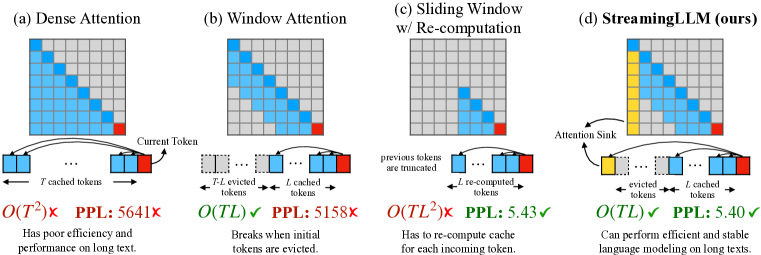
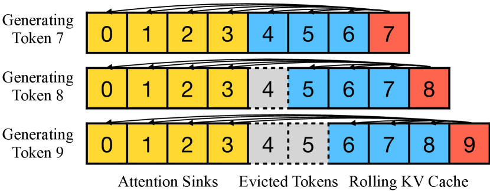

短上下文训练4K-8K
长上下文技术
模型在 4K 上下文上训练，怎么让它推理时能处理 128K 甚至 1M 的输入？这不是"把位置编码拉长"那么简单——位置编码外推、KV Cache 膨胀、注意力计算爆炸、长文本训练数据匮乏，每一关都是硬骨头。这一节梳理从位置插值到大海捞针评测的完整技术链路。
一图看懂
长上下文技术的核心挑战一句话：模型在短上下文上训练的位置编码，推理时拉到超长距离就"失真"了。解决办法分三步走——先靠位置插值让模型"假装"见过长距离，再用长文本继续训练让它"真的适应"长距离，最后用大海捞针评测验证它"真的能看到"远处的信息。
- 推理时需要更长上下文?是
- 位置插值PI / NTK-aware
- 长文本继续训练微调适配
- 大海捞针评测验证长距离检索
- 上线服务128K-1M
为什么长上下文难：三个瓶颈
把上下文窗口从 4K 扩到 128K，不只是"把 max_seq_len 改大"那么简单。三个瓶颈层层叠加：
位置编码外推
模型在 4K 位置上训练的 RoPE 频率，推理时放到 128K 位置，旋转角度超出训练范围，模型"看不懂"这些位置。
KV Cache 膨胀
KV Cache 随序列长度线性增长。128K 上下文的 KV Cache 可能比模型权重还大几倍，显存放不下。
注意力计算爆炸
标准注意力是 $O(n^2)$。128K 序列的分数矩阵是 4K 的 $(128/4)^2 = 1024$ 倍，计算量暴增。
第三个瓶颈——注意力计算爆炸——主要由 注意力变体（GQA/MLA/SWA）和 FlashAttention 解决。本节聚焦前两个：位置编码外推和 KV Cache 管理。
核心主题长上下文技术
01位置编码外推
- PI 统一压缩
- NTK-aware 分频率
- YaRN 分段缩放
02长文本训练
- 渐进扩展
- 跨距离检索数据
- 数据混合防遗忘
03评测
- 大海捞针
- 多针推理
- 注意力稀释
04显存管理
- GQA/MLA
- 量化与卸载
- 前缀缓存
位置编码外推：RoPE 的长度边界
当前主流大模型（LLaMA、Qwen、DeepSeek 等）几乎都使用 RoPE（旋转位置编码）。RoPE 的核心是：对 Q 和 K 的每一对维度施加一个与位置相关的旋转，使得两个位置的注意力分数只取决于它们的相对距离。
RoPE 对第 $m$ 个位置的旋转角度是 $\theta_i = m \cdot \omega_i$，其中 $\omega_i = 10000^{-2i/d}$ 是频率。问题在于：模型在 0–4096 位置上训练时，只见过 $\theta_i$ 在某个范围内的旋转。推理时位置 $m$ 拉到 131072，$\theta_i$ 超出训练范围——模型对这种"没见过的旋转角度"的行为是不可预测的，通常表现为注意力分数紊乱、长距离信息丢失。
关键认知
RoPE 不是"不能"用于训练范围外的位置，而是"没有学过"——模型在训练中从未见过这些位置编码对应的旋转角度，泛化行为不可保证。不同频率的维度受影响程度不同：高频维度（小 $i$）旋转快，外推时最先"卷绕"回训练范围；低频维度（大 $i$）旋转慢，外推相对安全。
位置插值（PI）：压缩而非外推
Position Interpolation（PI） 是最直接的解法：与其让位置编码超出训练范围（外推），不如把长序列的位置压缩到训练范围内（内插）。
具体做法是把推理时的位置 $m$ 缩放为 $m / s$（$s$ 是扩展倍数），让缩放后的位置落在训练范围内。比如训练时最大位置是 4096，要扩展到 16384（4 倍），就令 $s = 4$，实际位置 $m$ 用 $m/4$ 去查 RoPE。相当于把 16384 个位置"挤"进 4096 的范围内。
$$\text{RoPE}_{\text{PI}}(q, m) = q \cdot e^{i m \omega / s}, \quad s = \frac{L_{\text{target}}}{L_{\text{train}}}$$
PI 的优点是简单——改一行代码，不需要重新训练就能扩展上下文。但缺点也明显：压缩后相邻 token 之间的位置差异变小，模型对"谁在谁前面"的分辨率下降，短距离精度有损。通常 PI 之后需要做少量长文本微调来恢复精度。
NTK-aware：按频率分治
NTK-aware Scaling 是对 PI 的改进。PI 对所有频率维度统一缩放 $1/s$，但不同频率的维度对外推的敏感度不同——高频维度最怕外推，低频维度相对安全。NTK 的思路是：对高频维度少缩放、对低频维度多缩放，让高频维度尽量留在训练范围（保分辨率），低频维度允许外推（它们不怕）。
NTK-aware 修改 RoPE 的基频：
$$\text{base}_{\text{new}} = \text{base}_{\text{old}} \cdot s^{d/(d-2)}, \quad \omega_i = \text{base}_{\text{new}}^{-2i/d}$$
把这两步写成代码，能看清 NTK-aware 和 PI 的差别其实只在"怎么处理 base"：PI 不动 base、只缩放位置 $m$；NTK-aware 改 base、位置仍按原值查表。
import torch
def ntk_rope_base(old_base=10000.0, scale=4.0, dim=128):
# NTK-aware：把扩展倍数摊进 base，而非缩放位置
return old_base * (scale ** (dim / (dim - 2)))
def build_rope(seq_len, base, dim, scale=1.0):
inv_freq = 1.0 / (base ** (torch.arange(0, dim, 2) / dim)) # [dim/2]
t = torch.arange(seq_len) / scale # PI 用 scale>1 缩放位置
return torch.outer(t, inv_freq) # [seq_len, dim/2] 旋转角这基于 NTK（Neural Tangent Kernel）理论——不同频率的维度在训练中学习速度不同，外推时也应该区别对待。实践中 NTK-aware 比 PI 更好地保持了短距离精度，同时扩展了长距离能力。YaRN（Yet another RoPE extensioN）进一步改进了 NTK-aware，对不同频率段做更精细的分段缩放，是目前效果较好的 RoPE 扩展方法之一。
展开：为什么"改 base"比"缩放位置"更聪明
RoPE 把位置编码成一个旋转矩阵，每个维度对对应一个频率 $\omega_i$。训练时模型只见过位置 $m\in[0, L_{train})$ 对应的旋转角 $m\omega_i$。
PI 直接把位置读成 $m/s$，等于把所有维度的旋转角整体压小 $1/s$ 倍——高频维度（大 $\omega_i$）本来在训练范围内转得慢、外推时最先"卷绕"，PI 一压反而让它的相对分辨率下降，于是短距离精度受损。
NTK-aware 改的是 base：$\text{base}_{new} = \text{base}_{old}\cdot s^{d/(d-2)}$，等价于把每个频率 $\omega_i$ 乘上 $s^{-d/(d-2)}\cdot s^{2i/d}$——结果是一个频率相关的缩放：高频维度几乎不动（留在训练范围、保分辨率），低频维度大幅缩放（允许外推，它们旋转慢不怕）。NTK 理论告诉我们，低频维度在训练中"学得慢、泛化好"，所以让它承担外推的代价最小。这就是"按频率分治"的本质。
YaRN 进一步把维度分成若干频段，对每段用不同的缩放系数（并引入注意力缩放因子补偿 Softmax 温度），是目前开源模型（如 Llama 系列的长上下文版本）最常用的方案。
| 方法 | 思路 | 短距离精度 | 长距离能力 | 需要微调 |
|---|---|---|---|---|
| 直接外推 | 不做任何处理，超出训练范围直接用 | 不变 | 差（位置未见过） | 需要大量 |
| PI | 统一压缩所有频率 | 有损（分辨率下降） | 较好 | 少量微调 |
| NTK-aware | 高频少缩、低频多缩 | 保持好 | 好 | 少量或免微调 |
| YaRN | 分段精细缩放 | 保持好 | 最好 | 最少 |
- 高频维度低频维度高频维度低频维度
- 分辨率下降
- 高频维度1/s 缩放
安全压缩- 低频维度1/s 缩放
分辨率保持- 高频维度几乎不缩
允许外推- 低频维度大幅缩放
算例：外推与插值的角度账
上面的公式都比较抽象，我们用一个小模型把数字代进去算一遍。设 $d = 4$，即只有两对频率。按 $\omega_i = \text{base}^{-2i/d}$ 计算：$i = 0$ 对应 $\omega_0 = 1$（高频），$i = 1$ 对应 $\omega_1 = 10000^{-1/2} = 0.01$（低频）。训练窗口 $L = 4096$，目标扩展到 $131072$，倍数 $s = 32$。下表是各方法在目标端点位置上的实际旋转角度（弧度）：
| 方法 | 高频 $\omega_0=1$ 在 m=131072 的角度 | 低频 $\omega_1=0.01$ 在 m=131072 的角度 | 训练见过的最大角度 |
|---|---|---|---|
| 直接外推 | 131072（远超 4096） | 1310.72（远超 40.96） | 高频 4096 / 低频 40.96 |
| PI（缩放位置） | 4096（压回上限） | 40.96（压回上限） | — |
| NTK-aware（改 base） | 131072（保持原样） | 40.96（压回上限） | — |
核对一下 NTK-aware 那行的数字：$d = 4$ 时指数 $d/(d-2) = 2$，新 base 为 $10000 \times 32^2 = 10240000$，于是新频率 $\omega'_1 = 10240000^{-1/2} = 1/3200 = 0.01 / 32$。也就是说，低频维度的频率被除以 32，恰好把 131072 位置的角度压回训练上限 40.96；高频维度 $\omega'_0 = 1$ 完全没动，131072 位置的角度仍是 131072。这正是「高频少缩、低频多缩」的具体数字形态。
再看相邻位置的「分辨率」。扩展后窗口里，位置 $m = 65536$ 与 $m = 65537$ 只差一个 token：
- PI：两个位置的角度差是 $\omega / s$。低频 $\omega_1 = 0.01$ 时只有 $0.01 / 32 = 3.1 \times 10^{-4}$ 弧度——两个位置的旋转向量几乎重合，模型在长距离的中间段难以区分相邻 token。
- NTK-aware：低频同样被压到 $3.1 \times 10^{-4}$，但高频 $\omega_0 = 1$ 保持原样，角度差是 $1/32 = 0.031$ 弧度——虽然也比训练时小，但高频维度本来就是「短距离标尺」，它保住了，相邻 token 的可区分性就还在。
这套账解释了 NTK-aware 为什么比 PI 更常见：高频维度负责分辨近距离，低频维度负责覆盖远距离。PI 把两把尺子一起按 1/32 缩短；NTK-aware 只把「远距离那把尺子」缩短到训练范围里，而把「近距离那把尺子」原样留着。至于为什么高频维度敢留到超范围：它在 4096 的训练范围里已经转了约 652 圈（$4096 / 2\pi \approx 652$），所有相位都见过几百遍，外推到 131072 只是把见过的相位再多用一次；低频维度训练时只转了约 6.5 圈，相位没见过的区域很大，所以必须压回来。短距离精度保住，长距离又能装下——这就是它「几乎免微调就能扩展」的原因。
最后补一句关于「免训练扩展」的边界：NTK-aware 这类方法改的只是编码方式，模型内部的注意力模式和表示还是短文本训练出来的。经验上，免训练扩展能撑住的上下文上限远低于训练时的长度，且在真正需要跨距离检索的任务上往往失败。所以它的定位是「应急」和「配合微调的第一步」，而不是长上下文能力的替代品——真正的长距离能力，还得靠后面的长文本继续训练。
长文本继续训练：让模型"真的"适应长距离
位置插值解决了"位置编码超范围"的问题，但模型只是在"假装"见过长距离——注意力模式和内部表示还是短文本训练出来的。要让模型真正利用长上下文，通常需要长文本继续训练。
典型做法是：在原始短上下文训练的基础上，用长文本数据（序列长度 32K–128K）继续训练几千步。关键细节包括：
不同"上下文扩展"路线在成本与质量上的取舍不同，下面这张表把它们放一起对比：
| 方案 | 是否重训 | 数据需求 | 成本 | 长距离质量 | 典型适用 |
|---|---|---|---|---|---|
| 免训练扩展（NTK 极端版） | 否 | 无 | 几乎为零 | 弱（多败于检索） | 临时应急、短距离 |
| PI + 少量微调 | 是（几百~几千步） | 少量长文本 | 低 | 较好 | 最经济的常规方案 |
| 长文本 SFT | 是（数千~数万步） | 高质量长文本 + 检索任务 | 中 | 好 | 产品级长上下文 |
| 从头长上下文预训练 | 是（完整预训练） | 海量长文档 | 极高 | 最好 | 新架构 / 超长窗口 |
- 数据构成：长文本数据不能只有"长文档"——还需要包含需要跨距离检索的任务数据（如"在文章开头放一个事实，在结尾问关于它的问题"），否则模型只是"读了长文本"但没学会"用长距离信息"。
- 训练效率：长序列训练的显存和计算量远大于短序列。通常用序列并行（Sequence Parallelism）和 FlashAttention 来控制单步训练成本。
- 渐进扩展：不少模型采用渐进策略——先在 32K 上训一段，再扩到 64K、128K。这比直接跳到 128K 更稳定。
- 数据混合：长文本训练数据里混入一定比例的短文本数据，防止模型"忘记"短文本上的能力。
实践经验
位置插值 + 少量长文本微调（几百步到几千步）是最经济的长上下文扩展方案。完全不做微调的"免训练扩展"（如 NTK-aware 的极端版本）在短距离上效果尚可，但在真正需要长距离检索的任务上往往会失败——这正是大海捞针评测要检验的。
大海捞针评测：长上下文的试金石
怎么验证一个模型真的"能用"128K 上下文，而不是只是"能塞进"128K token？大海捞针（Needle in a Haystack）是当前最广泛使用的评测方法。
评测流程很直观：
- 准备一段长文本（如把若干篇文档拼到 128K 长度），作为"干草堆"。
- 在长文本的某个位置插入一句特定的事实陈述（如"在芝加哥赏花的最佳季节是夏天"），作为"针"。
- 在长文本末尾提问"赏花的最佳季节是什么？"，看模型能否正确回答"夏天"。
- 把"针"放在不同深度（0%、25%、50%、75%、100%），在不同上下文长度（4K、8K、32K、64K、128K）下重复测试，画成热力图。
把单轮"插针—提问"的流程画成时序图，能看清评测是怎么构造的：
sequenceDiagram
participant E as 评测脚本
participant H as 长文本(干草堆)
participant N as 插入的事实(针)
participant M as 被测模型
E->>H: 拼接到目标上下文长度
E->>N: 在深度 d% 处插入特定事实
E->>M: 喂入长文本 + 末尾提问
M->>M: 在上下文里检索相关信息
M-->>E: 返回答案
E->>E: 比对答案，记录热力图格子
一个真正具备长上下文能力的模型，热力图应该是几乎全绿——不管针放在哪里、上下文有多长，都能正确找到。如果只在针放在开头或结尾时正确（"边缘效应"），说明模型实际上只看了一头，中间的信息丢了。
大海捞针的局限
大海捞针只测"单针单跳检索"——找一个简单事实。它不测"多针推理"（需要综合多处信息才能回答）和"长文档理解"（需要全局把握结构）。因此大海捞针全绿不代表长上下文能力全面达标，但大海捞针不绿则一定有问题。它是必要条件，不是充分条件。更全面的评测还需要多针检索、长文档问答、长代码理解等任务。
从单针到多针：大海捞针不够用
大海捞针测的是「能不能找到一个事实」，但真实的长上下文任务往往要求「综合多处信息得出结论」。用一个小例子说明两者的差距。假设文档开头写着：
「小明把钥匙放在了厨房的抽屉里。」……（中间是一大段无关内容）……「晚上回家后，小明把钥匙从抽屉里拿出来，放进了卧室的保险柜。」
单针测试会问「钥匙在哪」，只要模型能找到其中一句（通常它会找最近的「保险柜」句），就能答对——哪怕它完全没理解两句话的关系。但真正的推理问题是「钥匙现在在哪」，正确答案是保险柜，因为第二句话改写了第一句话。这要求模型：第一，找到两处相关位置；第二，理解它们之间的时间先后和覆盖关系；第三，把「后发生的事实」优先于「先发生的事实」。
这就是「多针推理」（multi-needle）和「推理型」长上下文任务测的东西。业界观测到的典型现象是：模型在上下文长度变长时，中间部分的信息丢失最严重（所谓「迷失在中间」，Lost in the Middle）——两端的针容易找，中间的针常常被遗忘。因此评估长上下文能力时，至少要看三件事：单针检索、多针综合、位置敏感性（针放中间是否还能找到）。只看大海捞针全绿，很容易被「边缘效应」骗过。
这也解释了一个工程上的共识：与其一味拉长窗口，不如把上下文工程做好——把关键信息放在开头或结尾、显式要求模型「先搜索再回答」、必要时让模型先列出所有相关证据再下结论。长窗口给了「能装下」的容量，但「用得动」还需要评测和提示词的配合。
KV Cache 管理：长上下文的显存战场
即使注意力计算用 FlashAttention 优化了，KV Cache 的显存占用仍是长上下文推理的核心瓶颈。128K 上下文下，单条请求的 KV Cache 可以轻松超过模型权重的显存占用。应对手段包括：
- 注意力变体：GQA / MLA 从源头减少 KV 存储量，详见 注意力变体全景。
- KV Cache 量化：把 KV Cache 从 FP16 压到 INT8 甚至 INT4，直接减半或减至 1/4 显存。
- KV 卸载：把不常用的 KV Cache 换到 CPU 内存或 SSD，用时再换回 GPU。详见 KV 分级存储与卸载。
- 前缀缓存：多个请求共享相同的前缀（如系统提示），只存一份 KV。详见 KV Cache。
把这几种显存手段的节省量级放在一张表里，便于选型：
| 手段 | 作用对象 | 典型节省 | 精度影响 |
|---|---|---|---|
| GQA / MQA | KV 头数 | KV 头数等比下降（如 1/4~1/8） | 轻微 |
| MLA | KV 压缩维度 | 可达 1/32 | 几乎无损 |
| KV 量化 | 每元素字节数 | FP16→INT8 减半，→INT4 减至 1/4 | 低比特略损 |
| KV 卸载 | 驻留 GPU 的 KV | 显存上限大幅放开 | 换取带宽延迟 |
| 前缀缓存 | 重复前缀存储 | 共享前缀省一份/每并发 | 无损 |
注意力汇聚点（Attention Sink）：为什么开头的 token 不能丢
KV Cache 的显存压力催生了一个看似很自然的问题：能不能只保留「最近的窗口」内的 KV，把更早的历史全部丢掉？直观上，对话里最近的内容最有用，早期 token 该丢就丢。但实验却给出了反直觉的结果——一旦把序列开头的几个 token 的 KV 也丢掉，生成质量会急剧崩溃。这就是 注意力汇聚点（attention sink） 现象，也是 StreamingLLM 论文的核心发现。
为什么会这样？研究者发现，Softmax 注意力需要把整行分数归一化成和为 1，而模型在训练时学到的行为是：把一部分「固定占比」的注意力倾泻到早期 token 上，即使这些 token 语义上毫无意义（比如一个 BOS 标记）。这些早期 token 就像一个「排水口」，承接了多余的概率质量。一旦把排水口拆掉，注意力分布失去出口，数值上会出现剧烈畸变，后续 token 的表示就被污染了。
StreamingLLM 论文的 Figure 1 把四种「在长文本上生成」的策略放在一起对比，是理解这件事最直观的图。四格从左到右分别是：稠密注意力（每次对所有历史算注意力，缓存无限增长）、窗口注意力（只留最近窗口，一旦把开头 token 的 KV 逐出就崩溃）、滑窗+重算（每个新 token 都从最近的窗口重建 KV，效果好但慢）、以及 StreamingLLM（保留开头几个 token 的 KV 作为汇聚点 + 最近窗口，又快又稳）。

逐块读这张图：横轴是文本位置（模型在长度 L 上训练，现在要预测第 T 个 token，T 远大于 L），纵轴是困惑度（越低越好）。第一格 Dense Attention 在超过训练长度后困惑度开始恶化（因为位置编码外推），而且时间和缓存都随 T 平方/线性增长；第二格 Window Attention 在窗口没滚动到时表现不错，一旦开头的 KV 被窗口「挤出」，困惑度曲线骤然跳升——这就是 attention sink 失效的现场；第三格 Sliding Window + Re-computation 每个新 token 都从最近的 L 个 token 重建 KV，效果最好但复杂度是 O(TL²)，慢得不可用；第四格 StreamingLLM 保留「开头的 sink token + 最近窗口」，在长文本上保持和重算相当的质量，同时维持固定大小的缓存。这张图就是「为什么开头几个 token 不能丢」的完整证据链。
图里还有一个细节值得留意：注意力汇聚点不需要是「有意义」的 token。StreamingLLM 论文甚至发现，在预训练时就刻意加一个占位 token（比如 BOS）专门充当汇聚点，效果更好——因为它给了模型一个明确的「排水口」，不用把注意力浪费在真正的文本上。这个设计后来被不少长上下文模型采纳。

Figure 4 则是 StreamingLLM 的「缓存形态图」。看这张图的核心是理解它的两段式缓存：一段是固定的汇聚点缓存（开头的几个 token），一段是滚动的窗口缓存（最近 W 个 token）。窗口随生成不断前移，旧 token 的 KV 被逐出、新 token 的 KV 被写入，但汇聚点缓存永远不动。整个缓存的显存占用是「sink 数 + W」的常数，和文本总长度无关——这就是它能支持无限长流式生成的原因。这张图也和 KV Cache 页的分页管理天然衔接：StreamingLLM 决定了「留哪些 KV」，PagedAttention 决定「这些 KV 怎么存放」，两者正交。
展开：手算一遍——注意力汇聚点缓存到底省了多少
以 Llama-2-7B 为例：32 层、32 头、$d_{head}=128$、FP16，KV Cache 公式是「层数 × KV 头数 × 2 × 头维度 × 序列长度 × 2 字节」。传统上 KV Cache 随序列线性增长：单条请求 4K 上下文约 0.5 GB，32K 上下文约 4 GB，128K 上下文约 16 GB。
StreamingLLM 把「序列长度」这一项从「总长度 T」替换成「汇聚点个数 + 窗口大小 W」。取汇聚点 4 个、窗口 W = 2048：缓存 ≈ $32 \times 32 \times 2 \times 128 \times (4 + 2048) \times 2 \approx 0.27$ GB——比 32K 全量缓存的 4 GB 少了 15 倍左右，且这个数字在 T 增长到 400 万时依然不变（论文里验证了 400 万 token 的流式生成）。
代价是什么？窗口外的历史 token 的信息只存在于「残余状态」里——模型再也无法直接读到它们，只能靠窗口内 token 和汇聚点间接携带的信息。所以 StreamingLLM 适合「近因主导」的流式场景（对话、直播转录），不适合「必须精确回溯任意历史」的检索场景。
新手最容易搞错
注意力汇聚点常被误解为「模型真的认为开头 token 很重要」。恰恰相反——它被大量注意力的原因恰恰是它不重要：Softmax 需要一个归一化的「排水口」，模型把多余的概率质量倾倒在这些 token 上，让真正重要的 token 获得清晰的权重分布。所以你不能反过来「既然开头 token 重要，就多放点重要内容在开头」——sink 的设计初衷是「承接垃圾概率」，位置开头的真实重要信息反而会和 sink 抢注意力。另一个相关误区：StreamingLLM「不微调就能无限长」，这不代表它「读得懂全部历史」——它只是稳定，能持续生成；要真正利用长距离信息，仍然需要长文本训练。
注意力稀释：长上下文的隐性代价
即使技术上都搞定了——位置编码外推了、KV Cache 放得下了、注意力算得动了——还有一个更深层的现象：注意力稀释。
标准 Softmax 注意力会把概率分散到所有可见位置。上下文越长，注意力权重分布得越散——关键信息获得的注意力比例可能被大量无关 token 稀释。这意味着即使模型"能看到"远处的针，也可能因为注意力被稀释而"看不清"。
这正是 上下文工程 要解决的问题——不是所有信息都值得塞进上下文，精心组织上下文结构（重要信息前置、冗余信息删除、分层检索）比单纯拉长窗口更有效。长上下文给了"能放进去"的容量，但"放什么、怎么放"依然需要工程判断。
选型清单：什么时候值得追长上下文
长上下文不是免费的。在决定要不要把窗口从 4K 扩到 128K 之前，先算清楚三笔账。
第一，任务真的需要多长的上下文？对话、代码补全通常只需要局部信息，几千 token 足够；而整本小说总结、长报告分析、超大代码仓库检索，才需要上百 K。把「实际用到的上下文长度」统计一下，会发现大多数请求其实都很短——为极端需求付出全量代价并不划算。
第二，显存和延迟的账。以 32 层、32 头、FP16 的 7B 模型为例，单请求 128K 上下文的 KV Cache 约 16GB，和权重相当；batch size 一上去，显存立刻爆炸。如果目标是高并发推理，优先用 GQA/MLA 压缩 KV，而不是一味拉长窗口。
第三，评测的账。上完长上下文功能后，不要只跑大海捞针——要跑多针检索、长文档问答和长代码任务，并且对比不同深度、不同长度下的表现。如果热力图边缘绿、中间红，说明长上下文「形同虚设」，还得回去补长文本训练数据。
一句话总结：长上下文是一种能力，更是一种成本。先用量化手段确认需求分布，再决定投入——大多数团队最经济的选择，是「免训练扩展 + 少量微调 + 上下文工程」的组合，而不是一开始就冲 1M 窗口。
要点速查
- 三个瓶颈：位置编码外推、KV Cache 膨胀、注意力计算爆炸。前两个是长上下文专属，第三个由注意力变体和 FlashAttention 解决。
- 位置插值：PI 统一缩放位置（简单但损短距离精度）；NTK-aware 分频率缩放（高频保精度、低频保外推）；YaRN 最精细。
- 长文本训练：位置插值让模型"假装见过"长距离，长文本微调让它"真的适应"。需要包含跨距离检索任务数据。
- 大海捞针：在长文本不同深度插入事实，测试模型能否检索到。是长上下文的必要评测，但不充分（不测多针推理）。
- 常见坑：只做位置插值不微调，长距离检索失败；大海捞针全绿就以为长上下文"搞定"了，忽略了多针推理；KV Cache 没优化导致显存溢出。
参考文献与延伸阅读
- Extending Context Window of Large Language Models via Positional Interpolation — 位置插值（PI）原始论文 · arXiv:2306.15595
- YaRN: Efficient Context Window Extension of Large Language Models — YaRN 方法论文，对 RoPE 频率分段缩放 · arXiv:2309.00071
- Lost in the Middle: How Language Models Use Long Contexts — 分析长上下文中"中间信息丢失"现象的经典论文 · arXiv:2307.03172
- Efficient Streaming Language Models with Attention Sinks（StreamingLLM）— 注意力汇聚点现象的发现与固定缓存流式生成 · arXiv:2309.17453
- No Train No Gain: Revisiting Efficient Training Algorithms For Transformer-based Language Models — 对 PI/NTK 等扩展方法的系统评测，结论是「不训练就很难真的长上下文」 · arXiv:2407.06072
- RoFormer: Enhanced Transformer with Rotary Position Embedding — RoPE 原始论文 · arXiv:2104.09864
- LongBench: A Bilingual, Multitask Benchmark for Long Context Understanding — 覆盖多种长上下文任务的评测基准 · arXiv:2308.14508
- Hugging Face 博客: 如何扩展 LLM 的上下文长度 — 关于 RoPE 扩展方法与工具的工程实践综述 · huggingface.co/blog
接下来
长上下文解决"能读多长"的问题，而 KV Cache 解决"推理时怎么存"的问题，注意力变体 解决"算得少"的问题。三者共同决定了模型能服务的实际上下文长度。如果想看上下文工程层面的信息组织策略，见 上下文工程。
权威延伸资料
围绕“长上下文技术”继续深入
本章关注 Transformer 之后的架构选择：稀疏专家、线性/状态空间模型、长上下文、多模态和扩散语言模型。重点是理解每种方法改变了哪一层约束。
阅读提示：比较新架构时同时看训练目标、权重兼容性、推理状态和硬件实现；只看理论复杂度很容易得出错误结论。
- Switch Transformers: Scaling to Trillion Parameter Models ↗
MoE 路由、容量因子和负载均衡的经典介绍，适合建立稀疏激活的共同语言。
- Mamba: Linear-Time Sequence Modeling with Selective State Spaces ↗
选择性状态空间模型的代表作，解释线性扫描、选择机制和长序列效率之间的关系。
- GQA: Training Generalized Multi-Query Transformer Models ↗
用较少 KV 头降低推理带宽和缓存开销，是理解 MQA/GQA 工程取舍的直接来源。
- An Image is Worth 16x16 Words ↗
ViT 将图像 patch 化并交给 Transformer，帮助理解多模态视觉编码器的基本范式。
- Large Language Diffusion Models ↗
以 LLaDA 为代表的扩散语言模型工作，适合和自回归模型对照并识别当前研究边界。
资料优先选用原始论文、官方文档、大学课程和公共机构材料；链接按 2026-08-10 检索，具体版本以来源页面为准。
主题级技术深化
围绕“长上下文技术”继续深入
发展脉络
长上下文经历位置外推、RoPE scaling、长文档继续预训练和检索增强，窗口长度增加并不等价于有效利用率增加。
机制抓手
分别测长度外推、needle retrieval、跨段推理和位置偏置；记录有效 token、注意力衰减、KV 显存和训练数据长度分布。
工程权衡
更长窗口带来 quadratic attention、缓存和噪声成本；上下文压缩、分块检索和摘要常比单纯扩窗更稳定。
前沿观察
YaRN、位置插值、Ring/Block attention 和长序列训练仍在演进，必须区分支持长度、训练长度和可靠工作长度。
实践检查设计 4K/32K/128K 的同题对照，分别报告召回、推理、延迟和显存，而不是只写最大窗口。